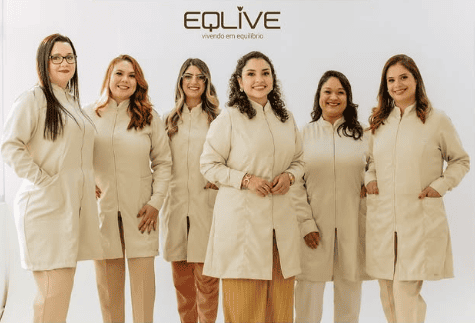
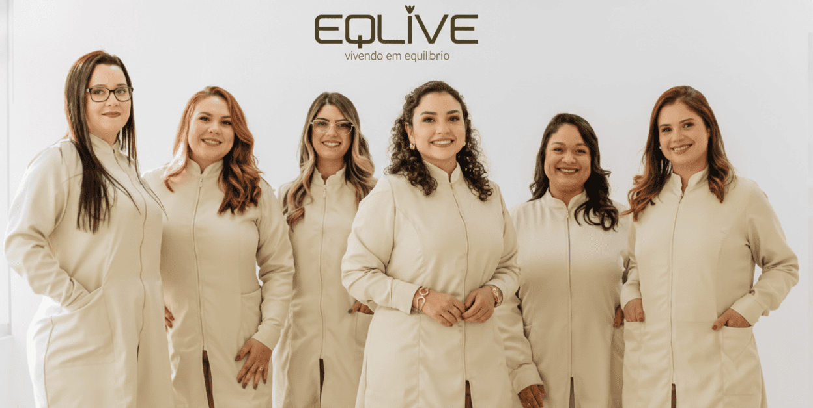

Condição
Hipotireoidismo
Quando o metabolismo desacelera — e o corpo sente.
Mesmo com exames “normais”, os sintomas podem persistir. Na Eqlive, avaliamos de forma integrada, respeitando a individualidade de cada pessoa.

A tireoide influencia muito mais do que um número no exame.
O corpo inteiro sente.

O que é
O que é hipotireoidismo
A tireoide produz hormônios que regulam metabolismo, energia e temperatura.
Quando esses hormônios estão baixos, o corpo desacelera e sintomas surgem.
Sinais
Sinais e sintomas comuns
Sintomas persistentes merecem investigação.
Cansaço constante
Ganho de peso
Sensação de frio
Queda de cabelo
Pele seca
Lentidão intestinal
Lentidão mental
Inchaço

Entenda
Por que é mal conduzido?
Foco apenas em um número de exame.
Interação com metabolismo é ignorada.
Falta acompanhamento contínuo.
Isso pode gerar sensação de que “algo não está certo”.
Modelo de cuidado
Como a Eqlive avalia
Visão integrada do corpo e dos sintomas.
Consulta médica aprofundada.
Análise hormonal e metabólica integrada.
Consideração de sono, alimentação e estresse.
Discussão multidisciplinar quando necessário.
Cuidado contínuo
Cuidado individualizado
O plano pode envolver:
Acompanhamento endocrinológico.
Estratégias nutricionais adaptadas.
Ajustes progressivos conforme resposta.
Monitoramento contínuo.
O objetivo é melhorar a qualidade de vida como um todo.
Para quem é indicado
Essa avaliação é indicada para
Diagnóstico de hipotireoidismo.
Sintomas persistentes apesar do tratamento.
Cansaço constante e lentidão metabólica.
Busca por cuidado médico contínuo.
Depoimento
“Eu seguia o tratamento, mas não me sentia bem. Na Eqlive, finalmente entendi o que meu corpo precisava.”
Paciente Eqlive · Acompanhamento para hipotireoidismo
Fechamento
Com acompanhamento adequado, é possível viver com mais energia.
A Eqlive está pronta para cuidar de você com atenção e profundidade.
